graph_tool.generation - Random graph generation¶
Summary¶
random_graph |
Generate a random graph, with a given degree distribution and (optionally) vertex-vertex correlation. |
random_rewire |
Shuffle the graph in-place, following a variety of possible statistical models, chosen via the parameter model. |
generate_sbm |
Generate a random graph by sampling from the Poisson or microcanonical stochastic block model. |
predecessor_tree |
Return a graph from a list of predecessors given by the pred_map vertex property. |
line_graph |
Return the line graph of the given graph g. |
graph_union |
Return the union of graphs g1 and g2, composed of all edges and vertices of g1 and g2, without overlap (if intersection == None). |
triangulation |
Generate a 2D or 3D triangulation graph from a given point set. |
lattice |
Generate a N-dimensional square lattice. |
geometric_graph |
Generate a geometric network form a set of N-dimensional points. |
price_network |
A generalized version of Price’s – or Barabási-Albert if undirected – preferential attachment network model. |
complete_graph |
Generate complete graph. |
circular_graph |
Generate a circular graph. |
condensation_graph |
Obtain the condensation graph, where each vertex with the same ‘prop’ value is condensed in one vertex. |
Contents¶
-
graph_tool.generation.random_graph(N, deg_sampler, directed=True, parallel_edges=False, self_loops=False, block_membership=None, block_type='int', degree_block=False, random=True, verbose=False, **kwargs)[source]¶ Generate a random graph, with a given degree distribution and (optionally) vertex-vertex correlation.
The graph will be randomized via the
random_rewire()function, and any remaining parameters will be passed to that function. Please read its documentation for all the options regarding the different statistical models which can be chosen.Parameters: N : int
Number of vertices in the graph.
deg_sampler : function
A degree sampler function which is called without arguments, and returns a tuple of ints representing the in and out-degree of a given vertex (or a single int for undirected graphs, representing the out-degree). This function is called once per vertex, but may be called more times, if the degree sequence cannot be used to build a graph.
Optionally, you can also pass a function which receives one or two arguments. If
block_membership is None, the single argument passed will be the index of the vertex which will receive the degree. Ifblock_membership is not None, the first value passed will be the vertex index, and the second will be the block value of the vertex.directed : bool (optional, default:
True)Whether the generated graph should be directed.
parallel_edges : bool (optional, default:
False)If
True, parallel edges are allowed.self_loops : bool (optional, default:
False)If
True, self-loops are allowed.block_membership : list or
ndarrayor function (optional, default:None)If supplied, the graph will be sampled from a stochastic blockmodel ensemble, and this parameter specifies the block membership of the vertices, which will be passed to the
random_rewire()function.If the value is a list or a
ndarray, it must havelen(block_membership) == N, and the values will define to which block each vertex belongs.If this value is a function, it will be used to sample the block types. It must be callable either with no arguments or with a single argument which will be the vertex index. In either case it must return a type compatible with the
block_typeparameter.See the documentation for the
vertex_corrparameter of therandom_rewire()function which specifies the correlation matrix.block_type : string (optional, default:
"int")Value type of block labels. Valid only if
block_membership is not None.degree_block : bool (optional, default:
False)If
True, the degree of each vertex will be appended to block labels when constructing the blockmodel, such that the resulting block type will be a pair \((r, k)\), where \(r\) is the original block label.random : bool (optional, default:
True)If
True, the returned graph is randomized. Otherwise a deterministic placement of the edges will be used.verbose : bool (optional, default:
False)If
True, verbose information is displayed.Returns: random_graph :
GraphThe generated graph.
blocks :
PropertyMapA vertex property map with the block values. This is only returned if
block_membership is not None.See also
random_rewire- in-place graph shuffling
Notes
The algorithm makes sure the degree sequence is graphical (i.e. realizable) and keeps re-sampling the degrees if is not. With a valid degree sequence, the edges are placed deterministically, and later the graph is shuffled with the
random_rewire()function, with all remaining parameters passed to it.The complexity is \(O(V + E)\) if parallel edges are allowed, and \(O(V + E \times\text{n-iter})\) if parallel edges are not allowed.
Note
If
parallel_edges == Falsethis algorithm only guarantees that the returned graph will be a random sample from the desired ensemble ifn_iteris sufficiently large. The algorithm implements an efficient Markov chain based on edge swaps, with a mixing time which depends on the degree distribution and correlations desired. If degree correlations are provided, the mixing time tends to be larger.References
[metropolis-equations-1953106] Metropolis, N.; Rosenbluth, A.W.; Rosenbluth, M.N.; Teller, A.H.; Teller, E. “Equations of State Calculations by Fast Computing Machines”. Journal of Chemical Physics 21 (6): 1087-1092 (1953). DOI: 10.1063/1.1699114 [sci-hub, @tor] [hastings-monte-carlo-1970106] Hastings, W.K. “Monte Carlo Sampling Methods Using Markov Chains and Their Applications”. Biometrika 57 (1): 97-109 (1970). DOI: 10.1093/biomet/57.1.97 [sci-hub, @tor] [holland-stochastic-1983106] (1, 2) Paul W. Holland, Kathryn Blackmond Laskey, and Samuel Leinhardt, “Stochastic blockmodels: First steps,” Social Networks 5, no. 2: 109-13 (1983) DOI: 10.1016/0378-8733(83)90021-7 [sci-hub, @tor] [karrer-stochastic-2011106] (1, 2) Brian Karrer and M. E. J. Newman, “Stochastic blockmodels and community structure in networks,” Physical Review E 83, no. 1: 016107 (2011) DOI: 10.1103/PhysRevE.83.016107 [sci-hub, @tor] arXiv: 1008.3926 Examples
This is a degree sampler which uses rejection sampling to sample from the distribution \(P(k)\propto 1/k\), up to a maximum.
>>> def sample_k(max): ... accept = False ... while not accept: ... k = np.random.randint(1,max+1) ... accept = np.random.random() < 1.0/k ... return k ...
The following generates a random undirected graph with degree distribution \(P(k)\propto 1/k\) (with k_max=40) and an assortative degree correlation of the form:
\[P(i,k) \propto \frac{1}{1+|i-k|}\]>>> g = gt.random_graph(1000, lambda: sample_k(40), model="probabilistic-configuration", ... edge_probs=lambda i, k: 1.0 / (1 + abs(i - k)), directed=False, ... n_iter=100)
The following samples an in,out-degree pair from the joint distribution:
\[p(j,k) = \frac{1}{2}\frac{e^{-m_1}m_1^j}{j!}\frac{e^{-m_1}m_1^k}{k!} + \frac{1}{2}\frac{e^{-m_2}m_2^j}{j!}\frac{e^{-m_2}m_2^k}{k!}\]with \(m_1 = 4\) and \(m_2 = 20\).
>>> def deg_sample(): ... if random() > 0.5: ... return np.random.poisson(4), np.random.poisson(4) ... else: ... return np.random.poisson(20), np.random.poisson(20) ...
The following generates a random directed graph with this distribution, and plots the combined degree correlation.
>>> g = gt.random_graph(20000, deg_sample) >>> >>> hist = gt.combined_corr_hist(g, "in", "out") >>> >>> figure() <...> >>> imshow(hist[0].T, interpolation="nearest", origin="lower") <...> >>> colorbar() <...> >>> xlabel("in-degree") Text(...) >>> ylabel("out-degree") Text(...) >>> tight_layout() >>> savefig("combined-deg-hist.svg")
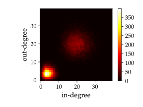Combined degree histogram.
A correlated directed graph can be build as follows. Consider the following degree correlation:
\[P(j',k'|j,k)=\frac{e^{-k}k^{j'}}{j'!} \frac{e^{-(20-j)}(20-j)^{k'}}{k'!}\]i.e., the in->out correlation is “disassortative”, the out->in correlation is “assortative”, and everything else is uncorrelated. We will use a flat degree distribution in the range [1,20).
>>> p = scipy.stats.poisson >>> g = gt.random_graph(20000, lambda: (sample_k(19), sample_k(19)), ... model="probabilistic-configuration", ... edge_probs=lambda a,b: (p.pmf(a[0], b[1]) * ... p.pmf(a[1], 20 - b[0])), ... n_iter=100)
Lets plot the average degree correlations to check.
>>> figure(figsize=(6,3)) <...> >>> corr = gt.avg_neighbor_corr(g, "in", "in") >>> errorbar(corr[2][:-1], corr[0], yerr=corr[1], fmt="o-", ... label=r"$\left<\text{in}\right>$ vs in") <...> >>> corr = gt.avg_neighbor_corr(g, "in", "out") >>> errorbar(corr[2][:-1], corr[0], yerr=corr[1], fmt="o-", ... label=r"$\left<\text{out}\right>$ vs in") <...> >>> corr = gt.avg_neighbor_corr(g, "out", "in") >>> errorbar(corr[2][:-1], corr[0], yerr=corr[1], fmt="o-", ... label=r"$\left<\text{in}\right>$ vs out") <...> >>> corr = gt.avg_neighbor_corr(g, "out", "out") >>> errorbar(corr[2][:-1], corr[0], yerr=corr[1], fmt="o-", ... label=r"$\left<\text{out}\right>$ vs out") <...> >>> legend(loc='center left', bbox_to_anchor=(1, 0.5)) <...> >>> xlabel("Source degree") Text(...) >>> ylabel("Average target degree") Text(...) >>> tight_layout() >>> box = gca().get_position() >>> gca().set_position([box.x0, box.y0, box.width * 0.7, box.height]) >>> savefig("deg-corr-dir.svg")
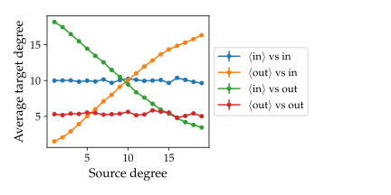Average nearest neighbor correlations.
Stochastic blockmodels
The following example shows how a stochastic blockmodel [holland-stochastic-1983106] [karrer-stochastic-2011106] can be generated. We will consider a system of 10 blocks, which form communities. The connection probability will be given by
>>> def prob(a, b): ... if a == b: ... return 0.999 ... else: ... return 0.001
The blockmodel can be generated as follows.
>>> g, bm = gt.random_graph(2000, lambda: poisson(10), directed=False, ... model="blockmodel", ... block_membership=lambda: randint(10), ... edge_probs=prob) >>> gt.graph_draw(g, vertex_fill_color=bm, edge_color="black", output="blockmodel.pdf") <...>
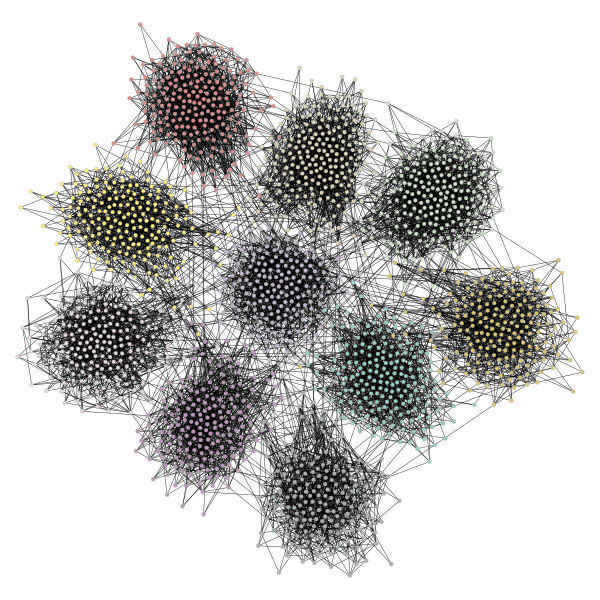Simple blockmodel with 10 blocks.
-
graph_tool.generation.random_rewire(g, model='configuration', n_iter=1, edge_sweep=True, parallel_edges=False, self_loops=False, configuration=True, edge_probs=None, block_membership=None, cache_probs=True, persist=False, pin=None, ret_fail=False, verbose=False)[source]¶ Shuffle the graph in-place, following a variety of possible statistical models, chosen via the parameter
model.Parameters: g :
GraphGraph to be shuffled. The graph will be modified.
model : string (optional, default:
"configuration")The following statistical models can be chosen, which determine how the edges are rewired.
erdosThe edges will be rewired entirely randomly, and the resulting graph will correspond to the \(G(N,E)\) Erdős–Rényi model.
configurationThe edges will be rewired randomly, but the degree sequence of the graph will remain unmodified.
constrained-configurationThe edges will be rewired randomly, but both the degree sequence of the graph and the vertex-vertex (in,out)-degree correlations will remain exactly preserved. If the
block_membershipparameter is passed, the block variables at the endpoints of the edges will be preserved, instead of the degree-degree correlation.probabilistic-configurationThis is similar to
constrained-configuration, but the vertex-vertex correlations are not preserved, but are instead sampled from an arbitrary degree-based probabilistic model specified via theedge_probsparameter. The degree-sequence is preserved.blockmodel-degreeThis is just like
probabilistic-configuration, but the values passed to theedge_probsfunction will correspond to the block membership values specified by theblock_membershipparameter.blockmodelThis is just like
blockmodel-degree, but the degree sequence is not preserved during rewiring.blockmodel-microThis is like
blockmodel, but the exact number of edges between groups is preserved as well.
n_iter : int (optional, default:
1)Number of iterations. If
edge_sweep == True, each iteration corresponds to an entire “sweep” over all edges. Otherwise this corresponds to the total number of edges which are randomly chosen for a swap attempt (which may repeat).edge_sweep : bool (optional, default:
True)If
True, each iteration will perform an entire “sweep” over the edges, where each edge is visited once in random order, and a edge swap is attempted.parallel_edges : bool (optional, default:
False)If
True, parallel edges are allowed.self_loops : bool (optional, default:
False)If
True, self-loops are allowed.configuration : bool (optional, default:
True)If
True, graphs are sampled from the corresponding maximum-entropy ensemble of configurations (i.e. distinguishable half-edge pairings), otherwise they are sampled from the maximum-entropy ensemble of graphs (i.e. indistinguishable half-edge pairings). The distinction is only relevant if parallel edges are allowed.edge_probs : function or sequence of triples (optional, default:
None)A function which determines the edge probabilities in the graph. In general it should have the following signature:
def prob(r, s): ... return p
where the return value should be a non-negative scalar.
Alternatively, this parameter can be a list of triples of the form
(r, s, p), with the same meaning as ther,sandpvalues above. If a given(r, s)combination is not present in this list, the corresponding value ofpis assumed to be zero. If the same(r, s)combination appears more than once, theirpvalues will be summed together. This is useful when the correlation matrix is sparse, i.e. most entries are zero.If
model == probabilistic-configurationthe parametersrandscorrespond respectively to the (in, out)-degree pair of the source vertex of an edge, and the (in,out)-degree pair of the target of the same edge (for undirected graphs, both parameters are scalars instead). The value ofpshould be a number proportional to the probability of such an edge existing in the generated graph.If
model == blockmodel-degreeormodel == blockmodel, therandsvalues passed to the function will be the block values of the respective vertices, as specified via theblock_membershipparameter. The value ofpshould be a number proportional to the probability of such an edge existing in the generated graph.block_membership :
PropertyMap(optional, default:None)If supplied, the graph will be rewired to conform to a blockmodel ensemble. The value must be a vertex property map which defines the block of each vertex.
cache_probs : bool (optional, default:
True)If
True, the probabilities returned by theedge_probsparameter will be cached internally. This is crucial for good performance, since in this case the supplied python function is called only a few times, and not at every attempted edge rewire move. However, in the case were the different parameter combinations to the probability function is very large, the memory and time requirements to keep the cache may not be worthwhile.persist : bool (optional, default:
False)If
True, an edge swap which is rejected will be attempted again until it succeeds. This may improve the quality of the shuffling for some probabilistic models, and should be sufficiently fast for sparse graphs, but otherwise it may result in many repeated attempts for certain corner-cases in which edges are difficult to swap.pin :
PropertyMap(optional, default:None)Edge property map which, if provided, specifies which edges are allowed to be rewired. Edges for which the property value is
1(orTrue) will be left unmodified in the graph.verbose : bool (optional, default:
False)If
True, verbose information is displayed.Returns: rejection_count : int
Number of rejected edge moves (due to parallel edges or self-loops, or the probabilistic model used).
See also
random_graph- random graph generation
Notes
This algorithm iterates through all the edges in the network and tries to swap its target or source with the target or source of another edge. The selected canditate swaps are chosen according to the
modelparameter.Note
If
parallel_edges = False, parallel edges are not placed during rewiring. In this case, the returned graph will be a uncorrelated sample from the desired ensemble only ifn_iteris sufficiently large. The algorithm implements an efficient Markov chain based on edge swaps, with a mixing time which depends on the degree distribution and correlations desired. If degree probabilistic correlations are provided, the mixing time tends to be larger.If
modelis either “probabilistic-configuration”, “blockmodel” or “blockmodel-degree”, the Markov chain still needs to be mixed, even if parallel edges and self-loops are allowed. In this case the Markov chain is implemented using the Metropolis-Hastings [metropolis-equations-1953110] [hastings-monte-carlo-1970110] acceptance/rejection algorithm. It will eventually converge to the desired probabilities for sufficiently large values ofn_iter.Each edge is tentatively swapped once per iteration, so the overall complexity is \(O(V + E \times \text{n-iter})\). If
edge_sweep == False, the complexity becomes \(O(V + E + \text{n-iter})\).References
[metropolis-equations-1953110] (1, 2) Metropolis, N.; Rosenbluth, A.W.; Rosenbluth, M.N.; Teller, A.H.; Teller, E. “Equations of State Calculations by Fast Computing Machines”. Journal of Chemical Physics 21 (6): 1087-1092 (1953). DOI: 10.1063/1.1699114 [sci-hub, @tor] [hastings-monte-carlo-1970110] (1, 2) Hastings, W.K. “Monte Carlo Sampling Methods Using Markov Chains and Their Applications”. Biometrika 57 (1): 97-109 (1970). DOI: 10.1093/biomet/57.1.97 [sci-hub, @tor] [holland-stochastic-1983110] Paul W. Holland, Kathryn Blackmond Laskey, and Samuel Leinhardt, “Stochastic blockmodels: First steps,” Social Networks 5, no. 2: 109-13 (1983) DOI: 10.1016/0378-8733(83)90021-7 [sci-hub, @tor] [karrer-stochastic-2011110] Brian Karrer and M. E. J. Newman, “Stochastic blockmodels and community structure in networks,” Physical Review E 83, no. 1: 016107 (2011) DOI: 10.1103/PhysRevE.83.016107 [sci-hub, @tor] arXiv: 1008.3926 Examples
Some small graphs for visualization.
>>> g, pos = gt.triangulation(np.random.random((1000,2))) >>> pos = gt.arf_layout(g) >>> gt.graph_draw(g, pos=pos, output="rewire_orig.pdf", output_size=(300, 300)) <...>
>>> ret = gt.random_rewire(g, "constrained-configuration") >>> pos = gt.arf_layout(g) >>> gt.graph_draw(g, pos=pos, output="rewire_corr.pdf", output_size=(300, 300)) <...>
>>> ret = gt.random_rewire(g) >>> pos = gt.arf_layout(g) >>> gt.graph_draw(g, pos=pos, output="rewire_uncorr.pdf", output_size=(300, 300)) <...>
>>> ret = gt.random_rewire(g, "erdos") >>> pos = gt.arf_layout(g) >>> gt.graph_draw(g, pos=pos, output="rewire_erdos.pdf", output_size=(300, 300)) <...>
Some ridiculograms :


 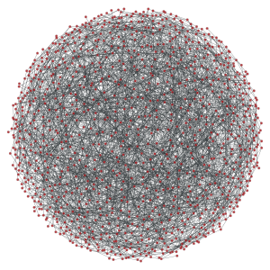
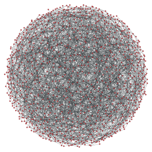
From left to right: Original graph; Shuffled graph, with degree correlations; Shuffled graph, without degree correlations; Shuffled graph, with random degrees.
We can try with larger graphs to get better statistics, as follows.
>>> figure(figsize=(6,3)) <...> >>> g = gt.random_graph(30000, lambda: sample_k(20), model="probabilistic-configuration", ... edge_probs=lambda i, j: exp(abs(i-j)), directed=False, ... n_iter=100) >>> corr = gt.avg_neighbor_corr(g, "out", "out") >>> errorbar(corr[2][:-1], corr[0], yerr=corr[1], fmt="o-", label="Original") <...> >>> ret = gt.random_rewire(g, "constrained-configuration") >>> corr = gt.avg_neighbor_corr(g, "out", "out") >>> errorbar(corr[2][:-1], corr[0], yerr=corr[1], fmt="*", label="Correlated") <...> >>> ret = gt.random_rewire(g) >>> corr = gt.avg_neighbor_corr(g, "out", "out") >>> errorbar(corr[2][:-1], corr[0], yerr=corr[1], fmt="o-", label="Uncorrelated") <...> >>> ret = gt.random_rewire(g, "erdos") >>> corr = gt.avg_neighbor_corr(g, "out", "out") >>> errorbar(corr[2][:-1], corr[0], yerr=corr[1], fmt="o-", label=r"Erd\H{o}s") <...> >>> xlabel("$k$") Text(...) >>> ylabel(r"$\left<k_{nn}\right>$") Text(...) >>> legend(loc='center left', bbox_to_anchor=(1, 0.5)) <...> >>> tight_layout() >>> box = gca().get_position() >>> gca().set_position([box.x0, box.y0, box.width * 0.7, box.height]) >>> savefig("shuffled-stats.svg")
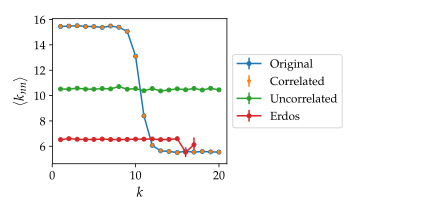Average degree correlations for the different shuffled and non-shuffled graphs. The shuffled graph with correlations displays exactly the same correlation as the original graph.
Now let’s do it for a directed graph. See
random_graph()for more details.>>> p = scipy.stats.poisson >>> g = gt.random_graph(20000, lambda: (sample_k(19), sample_k(19)), ... model="probabilistic-configuration", ... edge_probs=lambda a, b: (p.pmf(a[0], b[1]) * p.pmf(a[1], 20 - b[0])), ... n_iter=100) >>> figure(figsize=(6,3)) <...> >>> corr = gt.avg_neighbor_corr(g, "in", "out") >>> errorbar(corr[2][:-1], corr[0], yerr=corr[1], fmt="o-", ... label=r"$\left<\text{o}\right>$ vs i") <...> >>> corr = gt.avg_neighbor_corr(g, "out", "in") >>> errorbar(corr[2][:-1], corr[0], yerr=corr[1], fmt="o-", ... label=r"$\left<\text{i}\right>$ vs o") <...> >>> ret = gt.random_rewire(g, "constrained-configuration") >>> corr = gt.avg_neighbor_corr(g, "in", "out") >>> errorbar(corr[2][:-1], corr[0], yerr=corr[1], fmt="o-", ... label=r"$\left<\text{o}\right>$ vs i, corr.") <...> >>> corr = gt.avg_neighbor_corr(g, "out", "in") >>> errorbar(corr[2][:-1], corr[0], yerr=corr[1], fmt="o-", ... label=r"$\left<\text{i}\right>$ vs o, corr.") <...> >>> ret = gt.random_rewire(g, "configuration") >>> corr = gt.avg_neighbor_corr(g, "in", "out") >>> errorbar(corr[2][:-1], corr[0], yerr=corr[1], fmt="o-", ... label=r"$\left<\text{o}\right>$ vs i, uncorr.") <...> >>> corr = gt.avg_neighbor_corr(g, "out", "in") >>> errorbar(corr[2][:-1], corr[0], yerr=corr[1], fmt="o-", ... label=r"$\left<\text{i}\right>$ vs o, uncorr.") <...> >>> legend(loc='center left', bbox_to_anchor=(1, 0.5)) <...> >>> xlabel("Source degree") Text(...) >>> ylabel("Average target degree") Text(...) >>> tight_layout() >>> box = gca().get_position() >>> gca().set_position([box.x0, box.y0, box.width * 0.55, box.height]) >>> savefig("shuffled-deg-corr-dir.svg")
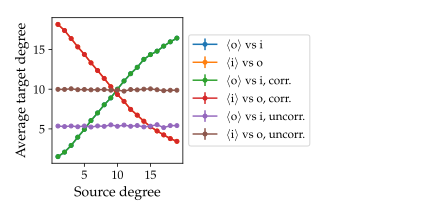Average degree correlations for the different shuffled and non-shuffled directed graphs. The shuffled graph with correlations displays exactly the same correlation as the original graph.
-
graph_tool.generation.generate_sbm(b, probs, out_degs=None, in_degs=None, directed=False, micro_ers=False, micro_degs=False)[source]¶ Generate a random graph by sampling from the Poisson or microcanonical stochastic block model.
Parameters: b : iterable or
numpy.ndarrayGroup membership for each node.
probs : two-dimensional
numpy.ndarrayorscipy.sparse.spmatrixMatrix with edge propensities between groups. The value
probs[r,s]corresponds to the average number of edges between groupsrands(or twice the average number ifr == sand the graph is undirected).out_degs : iterable or
numpy.ndarray(optional, default:None)Out-degree propensity for each node. If not provided, a constant value will be used. Note that the values will be normalized inside each group, if they are not already so.
in_degs : iterable or
numpy.ndarray(optional, default:None)In-degree propensity for each node. If not provided, a constant value will be used. Note that the values will be normalized inside each group, if they are not already so.
directed :
bool(optional, default:False)Whether the graph is directed.
micro_ers :
bool(optional, default:False)If true, the microcanonical version of the model will be evoked, where the numbers of edges between groups will be given exactly by the parameter
probs, and this will not fluctuate between samples.micro_degs :
bool(optional, default:False)If true, the microcanonical version of the degree-corrected model will be evoked, where the degrees of nodes will be given exactly by the parameters
out_degsandin_degs, and they will not fluctuate between samples. (Ifmicro_degs == Trueit impliesmicro_ers == True.)Returns: g :
GraphThe generated graph.
See also
random_graph- random graph generation
Notes
The algorithm generates multigraphs with self-loops, according to the Poisson degree-corrected stochastic block model (SBM), which includes the traditional SBM as a special case.
The multigraphs are generated with probability
\[\begin{split}P({\boldsymbol A}|{\boldsymbol \theta},{\boldsymbol \lambda},{\boldsymbol b}) = \prod_{i<j}\frac{e^{-\lambda_{b_ib_j}\theta_i\theta_j}(\lambda_{b_ib_j}\theta_i\theta_j)^{A_{ij}}}{A_{ij}!} \times\prod_i\frac{e^{-\lambda_{b_ib_i}\theta_i^2/2}(\lambda_{b_ib_i}\theta_i^2/2)^{A_{ij}/2}}{(A_{ij}/2)!},\end{split}\]where \(\lambda_{rs}\) is the edge propensity between groups \(r\) and \(s\), and \(\theta_i\) is the propensity of node i to receive edges, which is proportional to its expected degree. Note that in the algorithm it is assumed that the node propensities are normalized for each group,
\[\sum_i\theta_i\delta_{b_i,r} = 1,\]such that the value \(\lambda_{rs}\) will correspond to the average number of edges between groups \(r\) and \(s\) (or twice that if \(r = s\)). If the supplied values of \(\theta_i\) are not normalized as above, they will be normalized prior to the generation of the graph.
For directed graphs, the probability is analogous, with \(\lambda_{rs}\) being in general asymmetric:
\[P({\boldsymbol A}|{\boldsymbol \theta},{\boldsymbol \lambda},{\boldsymbol b}) = \prod_{ij}\frac{e^{-\lambda_{b_ib_j}\theta^+_i\theta^-_j}(\lambda_{b_ib_j}\theta^+_i\theta^-_j)^{A_{ij}}}{A_{ij}!}.\]Again, the same normalization is assumed:
\[\sum_i\theta_i^+\delta_{b_i,r} = \sum_i\theta_i^-\delta_{b_i,r} = 1,\]such that the value \(\lambda_{rs}\) will correspond to the average number of directed edges between groups \(r\) and \(s\).
The traditional (i.e. non-degree-corrected) SBM is recovered from the above model by setting \(\theta_i=1/n_{b_i}\) (or \(\theta^+_i=\theta^-_i=1/n_{b_i}\) in the directed case), which is done automatically if
out_degsandin_degsare not specified.In case the parameter
micro_degs == Trueis passed, a microcanical model is used instead, where both the number of edges between groups as well as the degrees of the nodes are preserved exactly, instead of only on expectation. In this case, the parameters are interpreted as \({\boldsymbol\lambda}\equiv{\boldsymbol e}\) and \({\boldsymbol\theta}\equiv{\boldsymbol k}\), where \(e_{rs}\) is the number of edges between groups \(r\) and \(s\) (or twice that if \(r=s\) in the undirected case), and \(k_i\) is the degree of node \(i\). This model is a generalization of the configuration model, where multigraphs are sampled with probability\[\begin{split}P({\boldsymbol A}|{\boldsymbol k},{\boldsymbol e},{\boldsymbol b}) = \frac{\prod_{r<s}e_{rs}!\prod_re_{rr}!!\prod_ik_i!}{\prod_re_r!\prod_{i<j}A_{ij}!\prod_iA_{ii}!!}.\end{split}\]and in the directed case with probability
\[P({\boldsymbol A}|{\boldsymbol k}^+,{\boldsymbol k}^-,{\boldsymbol e},{\boldsymbol b}) = \frac{\prod_{rs}e_{rs}!\prod_ik^+_i!k^-_i!}{\prod_re^+_r!e^-_r!\prod_{ij}A_{ij}!}.\]where \(e^+_r = \sum_se_{rs}\), \(e^-_r = \sum_se_{sr}\), \(k^+_i = \sum_jA_{ij}\) and \(k^-_i = \sum_jA_{ji}\).
In the non-degree-corrected case, if
micro_ers == True, the microcanonical model corresponds to\[\begin{split}P({\boldsymbol A}|{\boldsymbol e},{\boldsymbol b}) = \frac{\prod_{r<s}e_{rs}!\prod_re_{rr}!!}{\prod_rn_r^{e_r}\prod_{i<j}A_{ij}!\prod_iA_{ii}!!},\end{split}\]and in the directed case to
\[P({\boldsymbol A}|{\boldsymbol e},{\boldsymbol b}) = \frac{\prod_{rs}e_{rs}!}{\prod_rn_r^{e_r^+ + e_r^-}\prod_{ij}A_{ij}!}.\]In every case above, the final graph is generated in time \(O(V + E + B)\), where \(B\) is the number of groups.
References
[karrer-stochastic-2011114] Brian Karrer and M. E. J. Newman, “Stochastic blockmodels and community structure in networks,” Physical Review E 83, no. 1: 016107 (2011) DOI: 10.1103/PhysRevE.83.016107 [sci-hub, @tor] arXiv: 1008.3926 [peixoto-nonparametric-2017114] Tiago P. Peixoto, “Nonparametric Bayesian inference of the microcanonical stochastic block model”, Phys. Rev. E 95 012317 (2017). DOI: 10.1103/PhysRevE.95.012317 [sci-hub, @tor], arXiv: 1610.02703 Examples
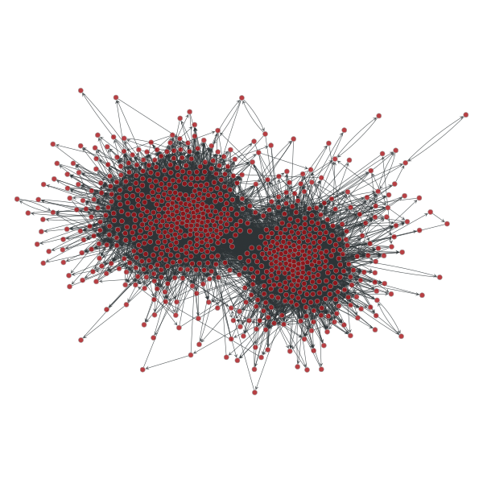 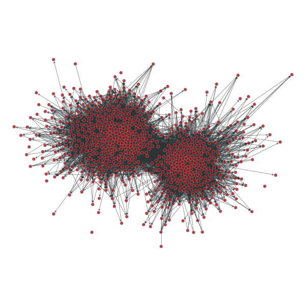>>> g = gt.collection.data["polblogs"] >>> g = gt.GraphView(g, vfilt=gt.label_largest_component(g)) >>> g = gt.Graph(g, prune=True) >>> state = gt.minimize_blockmodel_dl(g) >>> u = gt.generate_sbm(state.b.a, gt.adjacency(state.get_bg(), ... state.get_ers()).T, ... g.degree_property_map("out").a, ... g.degree_property_map("in").a, directed=True) >>> gt.graph_draw(g, g.vp.pos, output="polblogs-sbm.png") <...> >>> gt.graph_draw(u, u.own_property(g.vp.pos), output="polblogs-sbm-generated.png") <...>
Left: Political blogs network. Right: Sample from the degree-corrected SBM fitted to the original network.
{kind=link}
{kind=link}
-
graph_tool.generation.predecessor_tree(g, pred_map)[source]¶ Return a graph from a list of predecessors given by the
pred_mapvertex property.
-
graph_tool.generation.line_graph(g)[source]¶ Return the line graph of the given graph g.
Notes
Given an undirected graph G, its line graph L(G) is a graph such that
- each vertex of L(G) represents an edge of G; and
- two vertices of L(G) are adjacent if and only if their corresponding edges share a common endpoint (“are adjacent”) in G.
For a directed graph, the second criterion becomes:
- Two vertices representing directed edges from u to v and from w to x in G are connected by an edge from uv to wx in the line digraph when v = w.
References
[line-wiki116] http://en.wikipedia.org/wiki/Line_graph Examples
>>> g = gt.collection.data["lesmis"] >>> lg, vmap = gt.line_graph(g) >>> pos = gt.graph_draw(lg, output_size=(300, 300), output="lesmis-lg.pdf")
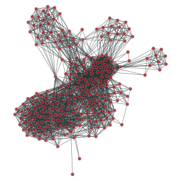Line graph of the coappearance of characters in Victor Hugo’s novel “Les Misérables”.
-
graph_tool.generation.graph_union(g1, g2, intersection=None, props=None, include=False, internal_props=False)[source]¶ Return the union of graphs
g1andg2, composed of all edges and vertices ofg1andg2, without overlap (ifintersection == None).Parameters: g1 :
GraphFirst graph in the union.
g2 :
GraphSecond graph in the union.
intersection :
PropertyMap(optional, default:None)Vertex property map owned by g2 which maps each of its vertices to vertex indexes belonging to g1. Negative values mean no mapping exists, and thus both vertices in g1 and g2 will be present in the union graph.
props : list of tuples of
PropertyMap(optional, default:None)Each element in this list must be a tuple of two PropertyMap objects. The first element must be a property of g1, and the second of g2. If either value is
None, an empty map is created. The values of the property maps are propagated into the union graph, and returned.include : bool (optional, default:
False)If
True, graph g2 is inserted into g1 which is modified. If false, a new graph is created, and both graphs remain unmodified.internal_props : bool (optional, default:
False)If
True, all internal property maps are propagated, in addition toprops.Returns: ug :
GraphThe union graph
props : list of
PropertyMapobjectsList of propagated properties. This is only returned if props is not empty.
Examples
>>> g = gt.triangulation(random((300,2)))[0] >>> ug = gt.graph_union(g, g) >>> uug = gt.graph_union(g, ug) >>> pos = gt.sfdp_layout(g) >>> gt.graph_draw(g, pos=pos, output_size=(300,300), output="graph_original.pdf") <...>
>>> pos = gt.sfdp_layout(ug) >>> gt.graph_draw(ug, pos=pos, output_size=(300,300), output="graph_union.pdf") <...>
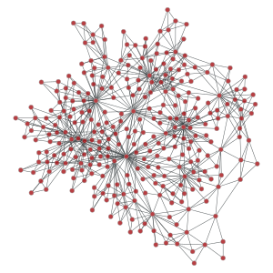 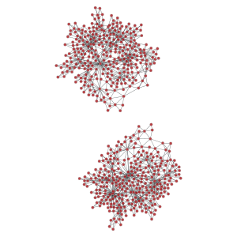 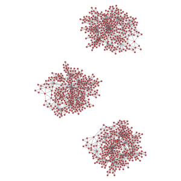>>> pos = gt.sfdp_layout(uug) >>> gt.graph_draw(uug, pos=pos, output_size=(300,300), output="graph_union2.pdf") <...>
-
graph_tool.generation.triangulation(points, type='simple', periodic=False)[source]¶ Generate a 2D or 3D triangulation graph from a given point set.
Parameters: points :
ndarrayPoint set for the triangulation. It may be either a N x d array, where N is the number of points, and d is the space dimension (either 2 or 3).
type : string (optional, default:
'simple')Type of triangulation. May be either ‘simple’ or ‘delaunay’.
periodic : bool (optional, default:
False)If
True, periodic boundary conditions will be used. This is parameter is valid only for type=”delaunay”, and is otherwise ignored.Returns: triangulation_graph :
GraphThe generated graph.
pos :
PropertyMapVertex property map with the Cartesian coordinates.
See also
random_graph- random graph generation
Notes
A triangulation [cgal-triang117] is a division of the convex hull of a point set into triangles, using only that set as triangle vertices.
In simple triangulations (type=”simple”), the insertion of a point is done by locating a face that contains the point, and splitting this face into three new faces (the order of insertion is therefore important). If the point falls outside the convex hull, the triangulation is restored by flips. Apart from the location, insertion takes a time O(1). This bound is only an amortized bound for points located outside the convex hull.
Delaunay triangulations (type=”delaunay”) have the specific empty sphere property, that is, the circumscribing sphere of each cell of such a triangulation does not contain any other vertex of the triangulation in its interior. These triangulations are uniquely defined except in degenerate cases where five points are co-spherical. Note however that the CGAL implementation computes a unique triangulation even in these cases.
References
[cgal-triang117] (1, 2) http://www.cgal.org/Manual/last/doc_html/cgal_manual/Triangulation_3/Chapter_main.html Examples
>>> points = random((500, 2)) * 4 >>> g, pos = gt.triangulation(points) >>> weight = g.new_edge_property("double") # Edge weights corresponding to ... # Euclidean distances >>> for e in g.edges(): ... weight[e] = sqrt(sum((array(pos[e.source()]) - ... array(pos[e.target()]))**2)) >>> b = gt.betweenness(g, weight=weight) >>> b[1].a *= 100 >>> gt.graph_draw(g, pos=pos, output_size=(300,300), vertex_fill_color=b[0], ... edge_pen_width=b[1], output="triang.pdf") <...>
>>> g, pos = gt.triangulation(points, type="delaunay") >>> weight = g.new_edge_property("double") >>> for e in g.edges(): ... weight[e] = sqrt(sum((array(pos[e.source()]) - ... array(pos[e.target()]))**2)) >>> b = gt.betweenness(g, weight=weight) >>> b[1].a *= 120 >>> gt.graph_draw(g, pos=pos, output_size=(300,300), vertex_fill_color=b[0], ... edge_pen_width=b[1], output="triang-delaunay.pdf") <...>
2D triangulation of random points:
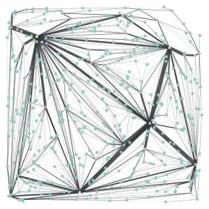 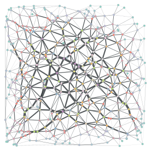Left: Simple triangulation. Right: Delaunay triangulation. The vertex colors and the edge thickness correspond to the weighted betweenness centrality.
-
graph_tool.generation.lattice(shape, periodic=False)[source]¶ Generate a N-dimensional square lattice.
Parameters: shape : list or
ndarrayList of sizes in each dimension.
periodic : bool (optional, default:
False)If
True, periodic boundary conditions will be used.Returns: lattice_graph :
GraphThe generated graph.
See also
triangulation- 2D or 3D triangulation
random_graph- random graph generation
References
[lattice118] http://en.wikipedia.org/wiki/Square_lattice Examples
>>> g = gt.lattice([10,10]) >>> pos = gt.sfdp_layout(g, cooling_step=0.95, epsilon=1e-2) >>> gt.graph_draw(g, pos=pos, output_size=(300,300), output="lattice.pdf") <...>
>>> g = gt.lattice([10,20], periodic=True) >>> pos = gt.sfdp_layout(g, cooling_step=0.95, epsilon=1e-2) >>> gt.graph_draw(g, pos=pos, output_size=(300,300), output="lattice_periodic.pdf") <...>
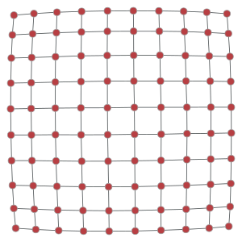 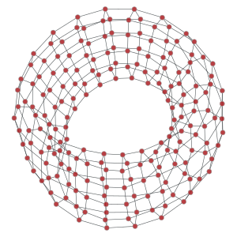>>> g = gt.lattice([10,10,10]) >>> pos = gt.sfdp_layout(g, cooling_step=0.95, epsilon=1e-2) >>> gt.graph_draw(g, pos=pos, output_size=(300,300), output="lattice_3d.pdf") <...>

Left: 10x10 2D lattice. Middle: 10x20 2D periodic lattice (torus). Right: 10x10x10 3D lattice.
-
graph_tool.generation.complete_graph(N, self_loops=False, directed=False)[source]¶ Generate complete graph.
Parameters: N :
intNumber of vertices.
self_loops : bool (optional, default:
False)If
True, self-loops are included.directed : bool (optional, default:
False)If
True, a directed graph is generated.Returns: complete_graph :
GraphA complete graph.
References
[complete119] http://en.wikipedia.org/wiki/Complete_graph Examples
>>> g = gt.complete_graph(30) >>> pos = gt.sfdp_layout(g, cooling_step=0.95, epsilon=1e-2) >>> gt.graph_draw(g, pos=pos, output_size=(300,300), output="complete.pdf") <...>
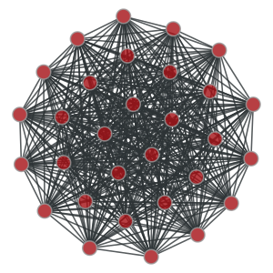A complete graph with \(N=30\) vertices.
-
graph_tool.generation.circular_graph(N, k=1, self_loops=False, directed=False)[source]¶ Generate a circular graph.
Parameters: N :
intNumber of vertices.
k :
int(optional, default:True)Number of nearest neighbors to be connected.
self_loops : bool (optional, default:
False)If
True, self-loops are included.directed : bool (optional, default:
False)If
True, a directed graph is generated.Returns: circular_graph :
GraphA circular graph.
Examples
>>> g = gt.circular_graph(30, 2) >>> pos = gt.sfdp_layout(g, cooling_step=0.95) >>> gt.graph_draw(g, pos=pos, output_size=(300,300), output="circular.pdf") <...>
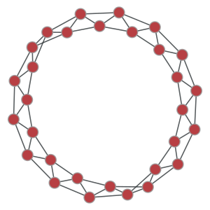A circular graph with \(N=30\) vertices, and \(k=2\).
-
graph_tool.generation.geometric_graph(points, radius, ranges=None)[source]¶ Generate a geometric network form a set of N-dimensional points.
Parameters: points : list or
ndarrayList of points. This must be a two-dimensional array, where the rows are coordinates in a N-dimensional space.
radius : float
Pairs of points with an euclidean distance lower than this parameters will be connected.
ranges : list or
ndarray(optional, default:None)If provided, periodic boundary conditions will be assumed, and the values of this parameter it will be used as the ranges in all dimensions. It must be a two-dimensional array, where each row will cointain the lower and upper bound of each dimension.
Returns: geometric_graph :
GraphThe generated graph.
pos :
PropertyMapA vertex property map with the position of each vertex.
See also
triangulation- 2D or 3D triangulation
random_graph- random graph generation
lattice- N-dimensional square lattice
Notes
A geometric graph [geometric-graph120] is generated by connecting points embedded in a N-dimensional euclidean space which are at a distance equal to or smaller than a given radius.
References
[geometric-graph120] (1, 2) Jesper Dall and Michael Christensen, “Random geometric graphs”, Phys. Rev. E 66, 016121 (2002), DOI: 10.1103/PhysRevE.66.016121 [sci-hub, @tor] Examples
>>> points = random((500, 2)) * 4 >>> g, pos = gt.geometric_graph(points, 0.3) >>> gt.graph_draw(g, pos=pos, output_size=(300,300), output="geometric.pdf") <...>
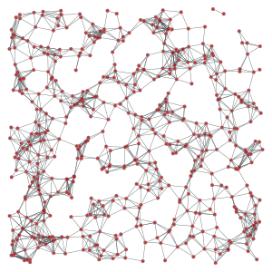 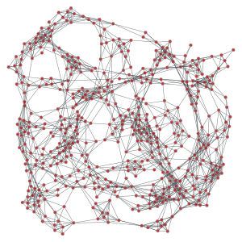>>> g, pos = gt.geometric_graph(points, 0.3, [(0,4), (0,4)]) >>> pos = gt.graph_draw(g, output_size=(300,300), output="geometric_periodic.pdf")
- Left: Geometric network with random points. Right: Same network, but
- with periodic boundary conditions.
-
graph_tool.generation.price_network(N, m=1, c=None, gamma=1, directed=True, seed_graph=None)[source]¶ A generalized version of Price’s – or Barabási-Albert if undirected – preferential attachment network model.
Parameters: N : int
Size of the network.
m : int (optional, default:
1)Out-degree of newly added vertices.
c : float (optional, default:
1 if directed == True else 0)Constant factor added to the probability of a vertex receiving an edge (see notes below).
gamma : float (optional, default:
1)Preferential attachment power (see notes below).
directed : bool (optional, default:
True)If
True, a Price network is generated. IfFalse, a Barabási-Albert network is generated.seed_graph :
Graph(optional, default:None)If provided, this graph will be used as the starting point of the algorithm.
Returns: price_graph :
GraphThe generated graph.
See also
triangulation- 2D or 3D triangulation
random_graph- random graph generation
lattice- N-dimensional square lattice
geometric_graph- N-dimensional geometric network
Notes
The (generalized) [price121] network is either a directed or undirected graph (the latter is called a Barabási-Albert network), generated dynamically by at each step adding a new vertex, and connecting it to \(m\) other vertices, chosen with probability \(\pi\) defined as:
\[\pi \propto k^\gamma + c\]where \(k\) is the in-degree of the vertex (or simply the degree in the undirected case). If \(\gamma=1\), the tail of resulting in-degree distribution of the directed case is given by
\[P_{k_\text{in}} \sim k_\text{in}^{-(2 + c/m)},\]or for the undirected case
\[P_{k} \sim k^{-(3 + c/m)}.\]However, if \(\gamma \ne 1\), the in-degree distribution is not scale-free (see [dorogovtsev-evolution121] for details).
Note that if seed_graph is not given, the algorithm will always start with one node if \(c > 0\), or with two nodes with a link between them otherwise. If \(m > 1\), the degree of the newly added vertices will be vary dynamically as \(m'(t) = \min(m, V(t))\), where \(V(t)\) is the number of vertices added so far. If this behaviour is undesired, a proper seed graph with \(V \ge m\) vertices must be provided.
This algorithm runs in \(O(V\log V)\) time.
References
[yule121] Yule, G. U. “A Mathematical Theory of Evolution, based on the Conclusions of Dr. J. C. Willis, F.R.S.”. Philosophical Transactions of the Royal Society of London, Ser. B 213: 21-87, 1925, DOI: 10.1098/rstb.1925.0002 [sci-hub, @tor] [price121] (1, 2) Derek De Solla Price, “A general theory of bibliometric and other cumulative advantage processes”, Journal of the American Society for Information Science, Volume 27, Issue 5, pages 292-306, September 1976, DOI: 10.1002/asi.4630270505 [sci-hub, @tor] [barabasi-albert121] Barabási, A.-L., and Albert, R., “Emergence of scaling in random networks”, Science, 286, 509, 1999, DOI: 10.1126/science.286.5439.509 [sci-hub, @tor] [dorogovtsev-evolution121] (1, 2) S. N. Dorogovtsev and J. F. F. Mendes, “Evolution of networks”, Advances in Physics, 2002, Vol. 51, No. 4, 1079-1187, DOI: 10.1080/00018730110112519 [sci-hub, @tor] Examples
>>> g = gt.price_network(20000) >>> gt.graph_draw(g, pos=gt.sfdp_layout(g, cooling_step=0.99), ... vertex_fill_color=g.vertex_index, vertex_size=2, ... edge_pen_width=1, output="price-network.png") <...> >>> g = gt.price_network(20000, c=0.1) >>> gt.graph_draw(g, pos=gt.sfdp_layout(g, cooling_step=0.99), ... vertex_fill_color=g.vertex_index, vertex_size=2, ... edge_pen_width=1, output="price-network-broader.png") <...>
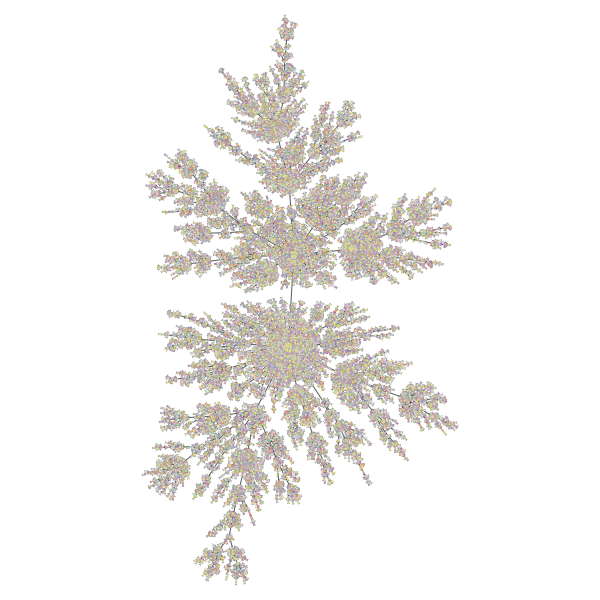Price network with \(N=2\times 10^4\) nodes and \(c=1\). The colors represent the order in which vertices were added.

Price network with \(N=2\times 10^4\) nodes and \(c=0.1\). The colors represent the order in which vertices were added.
-
graph_tool.generation.condensation_graph(g, prop, vweight=None, eweight=None, avprops=None, aeprops=None, self_loops=False, parallel_edges=False)[source]¶ Obtain the condensation graph, where each vertex with the same ‘prop’ value is condensed in one vertex.
Parameters: g :
GraphGraph to be modelled.
prop :
PropertyMapVertex property map with the community partition.
vweight :
PropertyMap(optional, default: None)Vertex property map with the optional vertex weights.
eweight :
PropertyMap(optional, default: None)Edge property map with the optional edge weights.
avprops : list of
PropertyMap(optional, default: None)If provided, the sum of each property map in this list for each vertex in the condensed graph will be computed and returned.
aeprops : list of
PropertyMap(optional, default: None)If provided, the sum of each property map in this list for each edge in the condensed graph will be computed and returned.
self_loops :
bool(optional, default:False)If
True, self-loops due to intra-block edges are also included in the condensation graph.parallel_edges :
bool(optional, default:False)If
True, parallel edges will be included in the condensation graph, such that the total number of edges will be the same as in the original graph.Returns: condensation_graph :
GraphThe community network
prop :
PropertyMapThe community values.
vcount :
PropertyMapA vertex property map with the vertex count for each community.
ecount :
PropertyMapAn edge property map with the inter-community edge count for each edge.
va : list of
PropertyMapA list of vertex property maps with summed values of the properties passed via the
avpropsparameter.ea : list of
PropertyMapA list of edge property maps with summed values of the properties passed via the
avpropsparameter.Notes
Each vertex in the condensation graph represents one community in the original graph (vertices with the same ‘prop’ value), and the edges represent existent edges between vertices of the respective communities in the original graph.
Examples
Let’s first obtain the best block partition with
B=5.>>> g = gt.collection.data["polbooks"] >>> # fit a SBM with 5 groups >>> state = gt.BlockState(g, B=5, deg_corr=True) >>> gt.mcmc_equilibrate(state, wait=1000) (...) >>> b = state.get_blocks() >>> gt.graph_draw(g, pos=g.vp["pos"], vertex_fill_color=b, vertex_shape=b, ... output="polbooks_blocks_B5.pdf") <...>
Now we get the condensation graph:
>>> bg, bb, vcount, ecount, avp, aep = \ ... gt.condensation_graph(g, b, avprops=[g.vp["pos"]], ... self_loops=True) >>> pos = avp[0] >>> for v in bg.vertices(): ... pos[v].a /= vcount[v] >>> gt.graph_draw(bg, pos=avp[0], vertex_fill_color=bb, vertex_shape=bb, ... vertex_size=gt.prop_to_size(vcount, mi=40, ma=100), ... edge_pen_width=gt.prop_to_size(ecount, mi=2, ma=10), ... output="polbooks_blocks_B5_cond.pdf") <...>

Block partition of a political books network with \(B=5\).
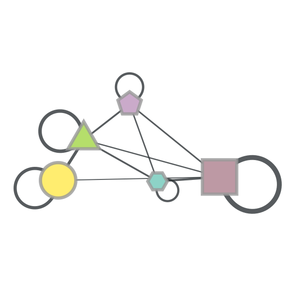Condensation graph of the obtained block partition.